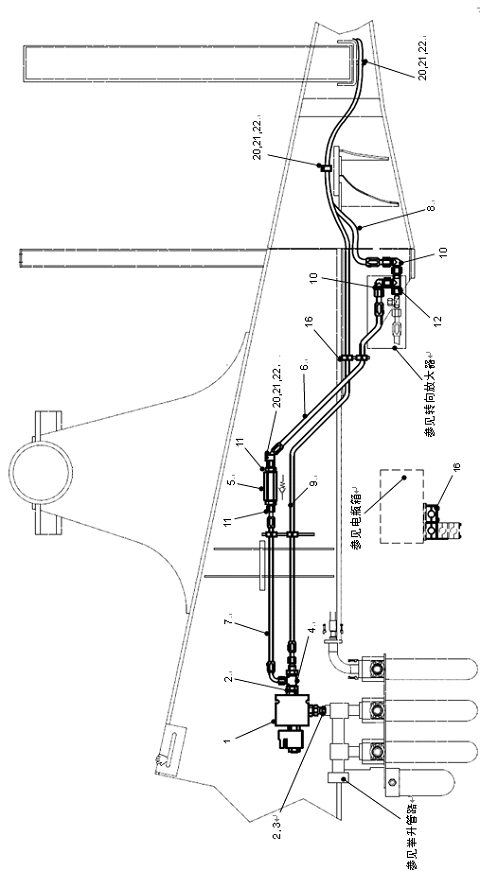
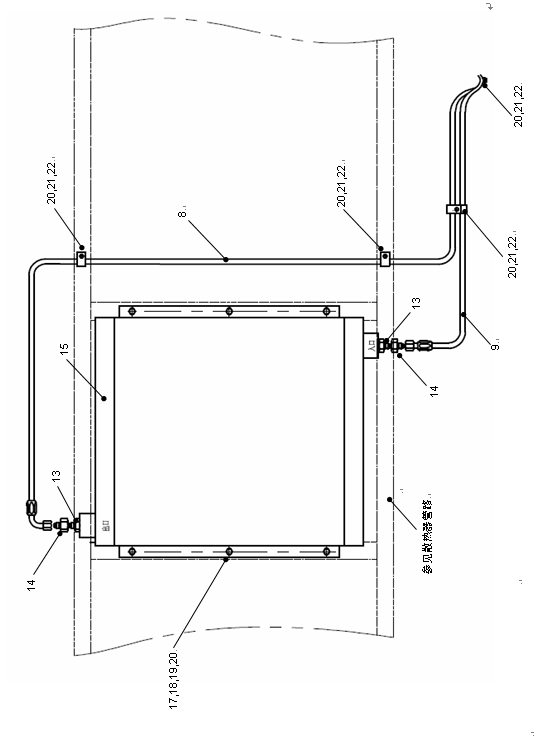

液压散热管路安装 · HYDRAULIC HEAT DISSIPATION
См. подъемный трубопроводСм. подъемный трубопроводСм. усилитель рулевого управленияСм. усилитель рулевого управленияСм. контейнер батарейСм. контейнер батарейРис 1. Гидравлическая система отвода тепла（1/2）图1. 液压散系统（1/2）Рис 1. Гидравлическая система отвода тепла（1/2）图1. 液压散系统（1/2）
См. подъемный трубопровод
См. подъемный трубопровод
См. усилитель рулевого управления
См. усилитель рулевого управления
См. контейнер батарей
См. контейнер батарей
Рис 1. Гидравлическая система отвода тепла（1/2）
图1. 液压散系统（1/2）
Рис 1. Гидравлическая система отвода тепла（1/2）
图1. 液压散系统（1/2）
См. трубопровод радиаторСм. трубопровод радиатор
См. трубопровод радиатор
См. трубопровод радиатор
1.Электромагнитный клапан с масляным охлаждением
9.Узел шланга
17.Болт
2.Прямое соединение
10.Патрубок
18.Гайка
3.Прямое соединение
11.Прямое соединение
19.Плоская шайба
4.Тройник
12.Тройник
20.Пружинная шайба
5.Байпасный клапан
13.Прямое соединение
21.Болт
6.Узел шланга
14.Прямое соединение
22.Зажим P
7.Узел шланга
15.Гидравлический радиатор
8.Узел шланга
16.Трубчатый зажим
Рис 1. Гидравлическая система отвода тепла (2/2)
Описание и расположение
Гидравлический радиатор (15) установлен на кронштейне переднего радиатора двигателя и используется, когда температура гидравлического масла выше определенного значения, чтобы поддерживать температуру гидравлического масла до подходящего значения.
Управление
Гидравлический радиатор (15) в основном используется для управления температурой гидравлического масла для поддержания надлежащего диапазона. Управление гидравлическим радиатором (15) осуществляется электромагнитным клапаном с масляным охлаждением (1), а в гидравлическом масляном баке устанавливается двухпозиционный выключатель температуры масла. Датчик температуры масла, когда температура гидравлического масла выше 60℃, включается электромагнитный клапан с масляным охлаждением, гидравлический радиатор работает, и температура гидравлического масла будет продолжать уменьшаться с рабочей температурой радиатора, когда температура масла ниже 60℃, электромагнитный клапан с масляным охлаждением выключается, и радиатор перестает работать.
Основная функция гидравлического радиатора (15) заключается в регулировании температуры гидравлического масла до температуры ниже 60℃. Если электромагнитный клапан с масляным охлаждением (1)не работает из-за неисправности, температура гидравлического масла будет продолжать расти, когда температура масла до 80℃, выключатель температуры масла запускает сигнальную лампу в кабине. В это время остановите автомобиль, чтобы устранить неисправность.
В гидравлической системе охлаждения для защиты гидравлического радиатора (15) установлен байпасный клапан (5). Давление открытия байпасного клапана (5) составляет 3.5bar, поэтому, когда гидравлическое давление в гидравлическом радиаторе превышает 3.5bar байпасный клапан открывается, чтобы предотвратить слишком высокое давление повредить гидравлический радиатор.
Проверка и ремонт
Гидравлическая система охлаждения может быть проверена и отремонтирована следующим образом:
1.Проверить все соединения труб и места соединения труб на наличие утечки масла или повреждения, если повреждены, отремонтировать или замените по требованиям..
2.Проверить поверхность гидравлического радиатора на наличие коррозии или повреждения. Если есть, Очистить, отремонтировать или замените по требованиям.
3.Проверить все сварные швы и монтажные кронштейны на наличие повреждений и отремонтировать или замените их по требованиям.
4.Если радиатор теряет масло или с серьезной коррозией, замените его, если он не может быть отремонтирован.
Примечание: рекомендуется использовать герметик резьбыдля всех трубных резьб.
Установка
Гидравлический радиатор можно установить следующим образом:
1.Прикрепить кронштейн радиатора к переднему кронштейну двигателя, установка должна быть надежной.
2.Установить гидравлический радиатор на кронштейн болтами
3.Подключить гидравлические линии, как показано на рисунке, и обратите внимание на отсутствие утечки трубопровода.
Примечание: при установке байпасного клапана убедиться, что направление не может быть обратным, в противном случае защита радиатора не может быть достигнута
4.Вставить розетку электромагнитного клапана с масляным охлаждением и закрепите его винтами.
Иллюстрации


